## 温馨提示：内容较长，需耐心观看
目录 一、定义式 二、函数公式 a.倒数关系 b.商数关系 c.平方关系 三、诱导公式 四、基本公式 a.两角和差公式 b.三角和公式 c.积化和差公式 d.和差化积公式 e.倍角公式 f.半角公式 g.万能公式 h.辅助角公式 五、反三角函数
三角函数公式包括和差角公式、和差化积公式、积化和差公式、倍角公式、诱导公式等。
本文重点：巧记和差化积、积化和差公式 （很多小伙伴记了就忘，忘了又记）
# 01 定义式
三角函数公式是数学中属于初等函数中的超越函数的一类函数公式。它们的本质是任意角的集合与一个比值的集合的变量之间的映射，通常的三角函数是在平面直角坐标系中定义的。
## 02 函数公式
倒数关系:
商数关系：
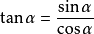平方关系：
 ## 03 诱导公式
## 03 诱导公式
1.公式1：设α为任意角，终边相同的角的同一三角函数的值相等
![[公式]](Public/upload/20211027/16353179579.svg)
![[公式]](Public/upload/20211027/16353179578.svg)
![[公式]](Public/upload/20211027/16353179573.svg)
![[公式]](Public/upload/20211027/16353179572.svg)
2.公式二：设α为任意角，π+α的三角函数值与α的三角函数值之间的关系
sin(π+α) ＝ －sinα
cos(π+α)＝－cosα
tan(π+α)＝ tanα
cot(π+α)＝cotα
3.公式三：任意角α与-α的三角函数值之间的关系
sin(－α)=－sinα
cos(－α)=cosα
tan(－α)=－tanα
cot(－α)=－cotα
4. 公式四：利用公式二和公式三可以得到π-α与α的三角函数值之间的关系
sin(π－α)=sinα
cos(π－α)=－cosα
tan(π－α)=－tanα
cot(π－α)=－cotα
5、公式五：利用公式一和公式三可以得到2π-α与α的三角函数值之间的关系
sin(2π－α)=－sinα
cos(2π－α)=cosα
tan(2π－α)=－tanα
cot(2π－α)=－cotα
6、公式六：π/2±α与α的三角函数值之间的关系
sin(π/2+α)=cosα
sin(π/2－α)=cosα
cos(π/2+α)=－sinα
cos(π/2－α)=sinα
tan(π/2+α)=－cotα
tan(π/2－α)=cotα
cot(π/2+α)=－tanα
cot(π/2－α)=tanα
记背诀窍：奇变偶不变，符号看象限，即形如（2k+1）90°±α，则函数名称变为余名函 数，正弦变余弦，余弦变正弦，正切变余切，余切变正切。形如2k×90°±α，则函数名称不变。
# 04 基本公式
a. 二角和差公式：
口诀（正余弦两角和差公式）：
赛壳壳赛符号同，壳壳赛赛符号异。
- 正弦和差前后同号，余弦和差前后异号
- 正弦和差公式始终是sin与cos相乘; 余弦和差公式始终是cos与cos相乘，sin与sin相乘
cos(α+β)=cosα·cosβ-sinα·sinβ
cos(α-β)=cosα·cosβ+sinα·sinβ
sin(α±β)=sinα·cosβ±cosα·sinβ
再说一下tan和差公式的记忆。
由下图可以看到，tan和差公式的右边分式，分子与分母符号是不同的，而左边与分子符号又是相同的。这样我们就能通过左边确定等式右边的符号。
再记住上加下乘，就能把tan的每一项记住了。
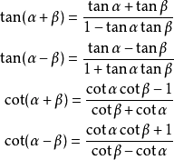 > b .三角和公式：
> b .三角和公式：
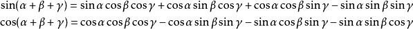
注意！注意！注意！
人间大炮一级准备!!！
c. 积化和差公式：
![[公式]](Public/upload/20211027/16353179588.svg)
口诀：
正余余正，正加正减；
余余正正，余加负余减。
d. 和差化积公式：
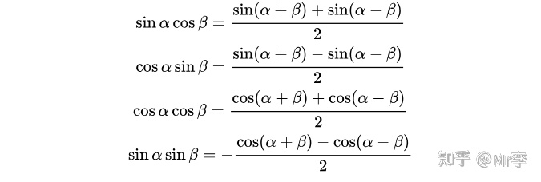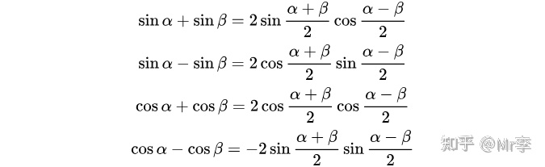正加正，正在前；
正减正，余在前；
余加余，余并肩；
余减余，负正弦。
“两个口诀互逆，但推荐分别记忆，这样用起来会非常快！！
敲黑板，下面重点。
人间大炮二级准备!!!
> 前后项数统一：
- 积是一项，化和差后要
![[公式]](Public/upload/20211027/16353179596.svg) ；
； - 和差是两项，化积后要成
![[公式]](Public/upload/20211027/16353179599.svg) 。
。
内外项数统一：
- 括号内变量都是先
![[公式]](Public/upload/20211027/16353179590.svg) ，再 。
，再 。 - 化和差后是两项，
![[公式]](Public/upload/20211027/16353179592.svg) 两项不变；
两项不变； - 化积后是一项， 要 变一项。
# or 帅哥记忆法：
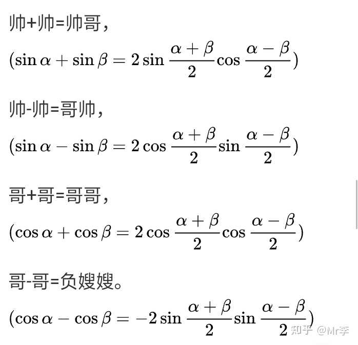积化和差只需反过来说，即：
- 帅哥=帅+帅
- 哥帅=帅-帅
- 哥哥=哥+哥
- 负嫂嫂=哥-哥
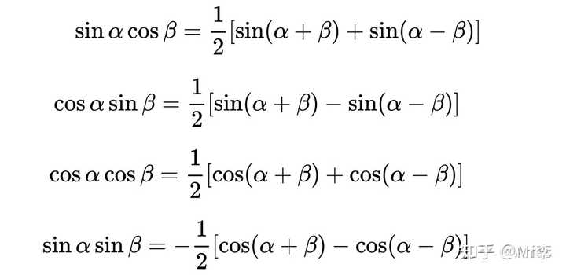本人更喜欢第一种方法，直接记忆好记并且快。
e. 倍角公式：
◆ 二倍角公式
 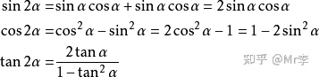推论： 升幂缩角公式
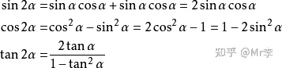推论： 升幂缩角公式
降幂扩角公式
运用二倍角公式就是升幂，将公式Cos2α变形后可得到降幂公式。
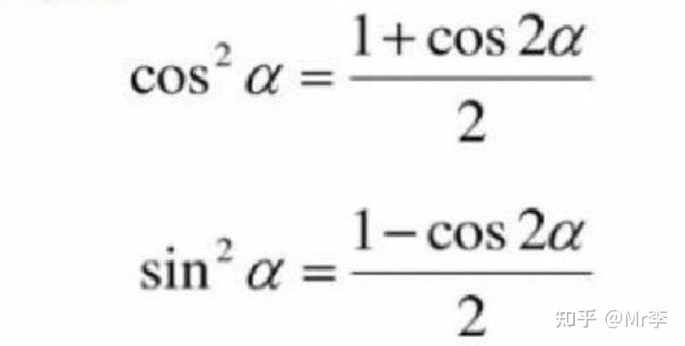◆ 三倍角公式

 ◆ 四倍角公式
◆ 四倍角公式
![[公式]](Public/upload/20211027/16353179610.svg)
![[公式]](Public/upload/20211027/163531796110.svg)
![[公式]](Public/upload/20211027/16353179613.svg)
◆ 五倍角公式
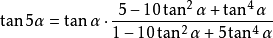◆ 半角公式
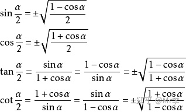（正负由 ![[公式]](Public/upload/20211027/16353179626.svg) 所在的象限决定）
所在的象限决定）
◆ 万能公式
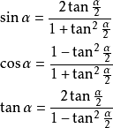◆ 辅助角公式
◆ 余弦定理


◆ 三角函数公式算面积
定理：
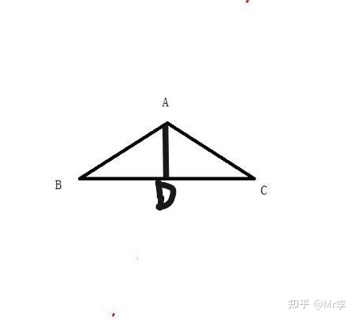在△ABC中，其面积就应该是底边对应的高的1/2，不妨设AD边对应的高是BC，那么△ABC的面积就是BCAD1/2。而AD是垂直于BC的，这样△ADC就是直角三角形了，由此可以得出， ![[公式]](Public/upload/20211027/16353179635.svg)
![[公式]](Public/upload/20211027/16353179632.svg) ，将这个式子带回三角形的计算公式中就可以得到：S△ABC=
，将这个式子带回三角形的计算公式中就可以得到：S△ABC= ![[公式]](Public/upload/20211027/16353179644.svg)
同理，即可得出三角形的面积等于两邻边及其夹角正弦值的乘积的一半。
◆ 公式：
若△ABC中角A，B，C所对的三边是a,b,c：
则S△ABC=
◆ 反三角函数
在数学中，反三角函数(偶尔也称为弧函数，反严密函数或圈度量函数)是三角函数的反函数(具有适当限制的域)。具体而言，它们是正弦、余弦、正切、余切、正割和余割的逆函数，并用于从任何角度的三角比获得角度。
反三角函数主要是三个：
![[公式]](Public/upload/20211027/16353179647.svg) ，定义域[-1,1] ，值域[-π/2,π/2]
，定义域[-1,1] ，值域[-π/2,π/2]
![[公式]](Public/upload/20211027/16353179645.svg) ，定义域[-1,1] ， 值域[0,π]
，定义域[-1,1] ， 值域[0,π]
![[公式]](Public/upload/20211027/16353179646.svg) ，定义域(-∞,+∞)，值域(-π/2,π/2)
，定义域(-∞,+∞)，值域(-π/2,π/2)
![[公式]](Public/upload/20211027/16353179642.svg) 定义域[-1,1],值域 【-π/2,π/2】
定义域[-1,1],值域 【-π/2,π/2】
◆ 反三角函数公式:
余角关系
 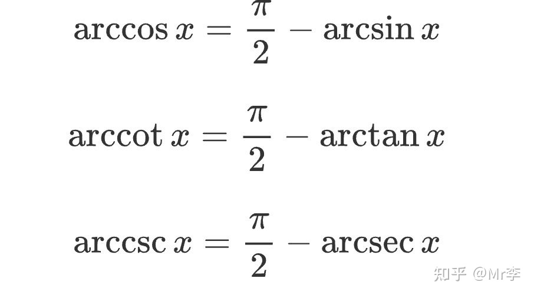负数关系
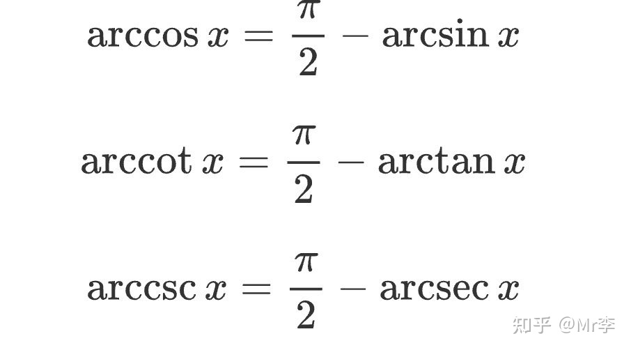负数关系
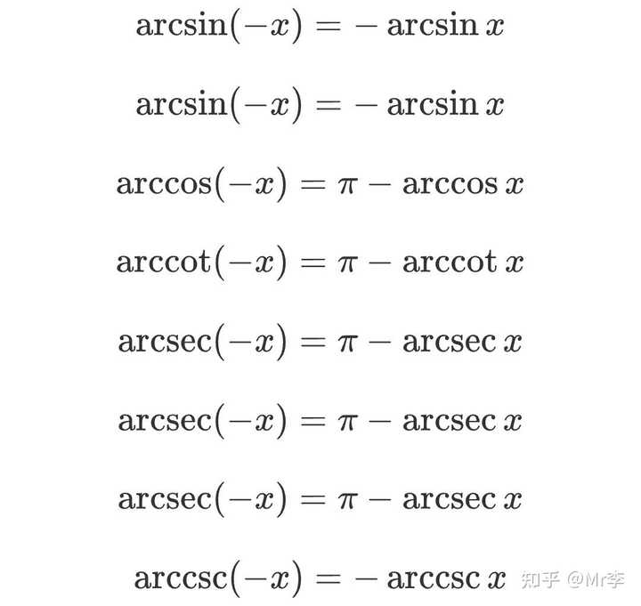倒数关系
 同角关系
同角关系
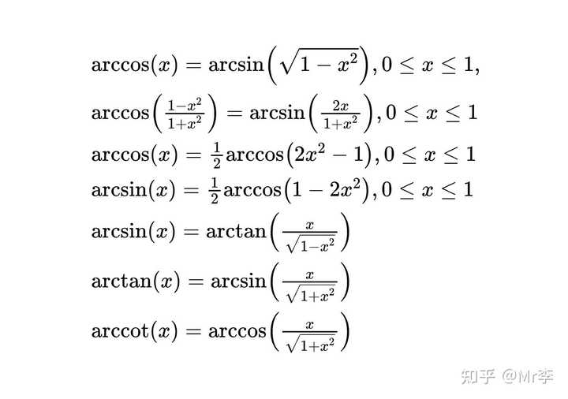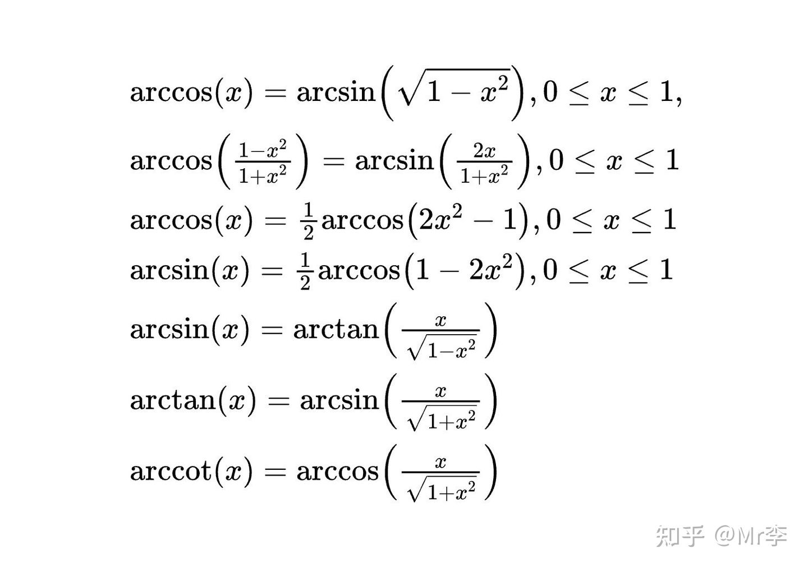
另外
![[公式]](Public/upload/20211027/163531796510.svg)
当 ![[公式]](Public/upload/20211027/16353179652.svg)
![[公式]](Public/upload/20211027/16353179659.svg)
![[公式]](Public/upload/20211027/16353179653.svg)
![[公式]](Public/upload/20211027/16353179671.svg)
![[公式]](Public/upload/20211027/16353179675.svg)
若
则![[公式]](Public/upload/20211027/16353179672.svg)
如有发现错误，敬请指摘！可能是不小心打错的，毕竟公式这么多（我真会给我自己找台阶下）
感谢每一个认真阅读，并反馈所发现的错误的人，正是由于你们的存在，这篇文章才更完美。
也为文章中错误给读者带来的不便表示抱歉。
如果觉得本文对你有帮助，请点赞收藏，以便你能第一时间找到~~~
文章来源：https://www.zhihu.com/question/63652417/answer/2115612979